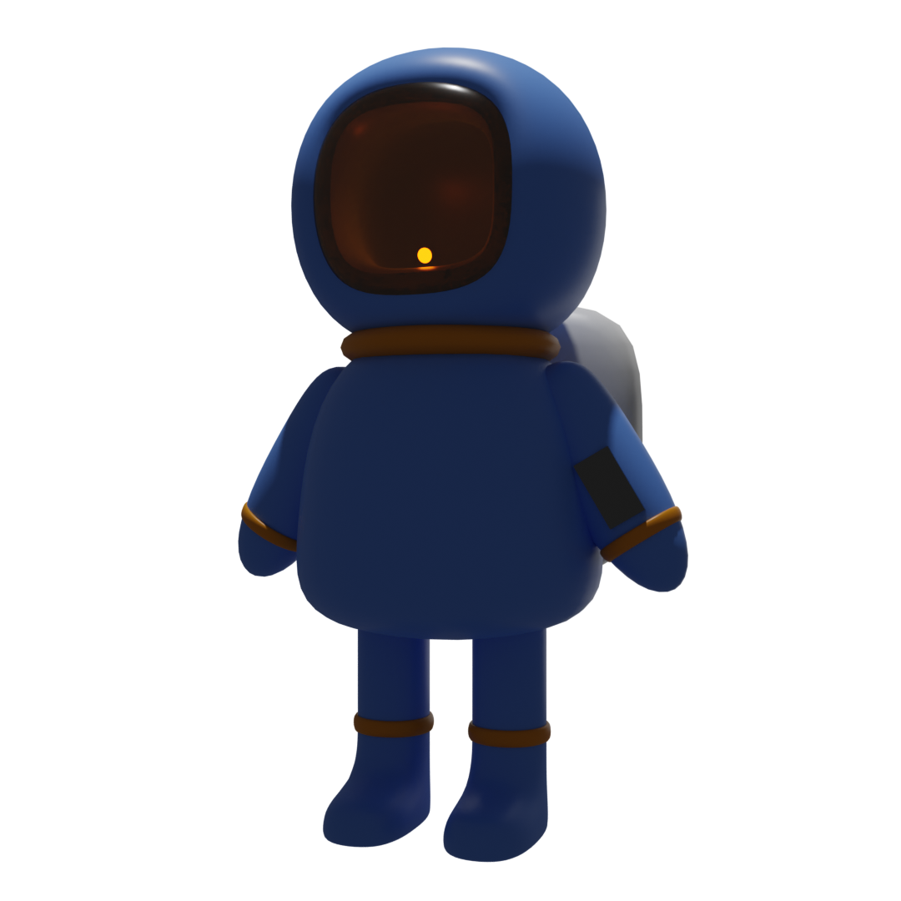

RUBEN SANCHEZ
RESEARCH SCIENTIST

I'm a researcher and front end engineer specializing in interactive motion design and data visualization.
Details
I'm a researcher and front end engineer specializing in interactive motion design and data visualization.
Details